Ação Popular: Instrumento Jurídico em Defesa do Patrimônio Histórico e Cultural do Povoado de Bragolândia
O patrimônio histórico e cultural é o reflexo das identidades e raízes de determinado grupo social e precisa ser preservado, como forma de garantir a manutenção de seus usos, costumes, saberes e tradições. A ação popular representa importante avanço na democracia participativa e possibilita a qualquer cidadão acionar o Poder Judiciário quando a administração pública agir ou omitir-se em ato que coloque em risco a preservação do patrimônio histórico e cultural - art. 5º, inciso LXXIII, Constituição Federal (BRASIL, 1988). A partir de pesquisa de coleta de dados, apurou-se que o Povoado de Bragolândia guarda conjunto arquitetônico histórico em delicado estado de conservação, ao mesmo tempo em que seus moradores desconhecem o instituto da ação popular. A presente intervenção pretende produzir conhecimento junto à população do Povoado de Bragolândia sobre o instrumento jurídico da ação popular e seu papel no resgate e preservação do patrimônio histórico e cultural local. O resultado é que, apesar de não consolidada a consciência daquela população quanto ao uso da ação popular, é inegável que foi um primeiro passo para despertar a comunidade de Bragolândia sobre a existência de meio jurídico e de alcance de todos para resgate do patrimônio histórico e cultural daquele povoado.
Coordenadora de orientação: Vânia Dolores Estevam de Oliveira
Anexos
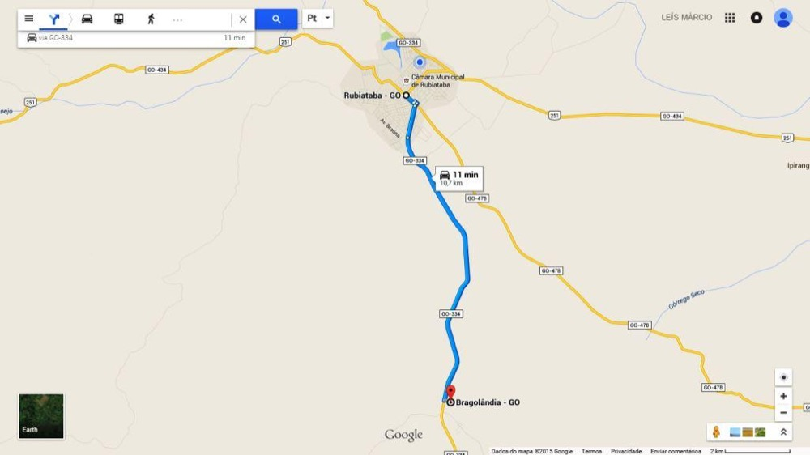
Descrição da fotoDescrição da foto
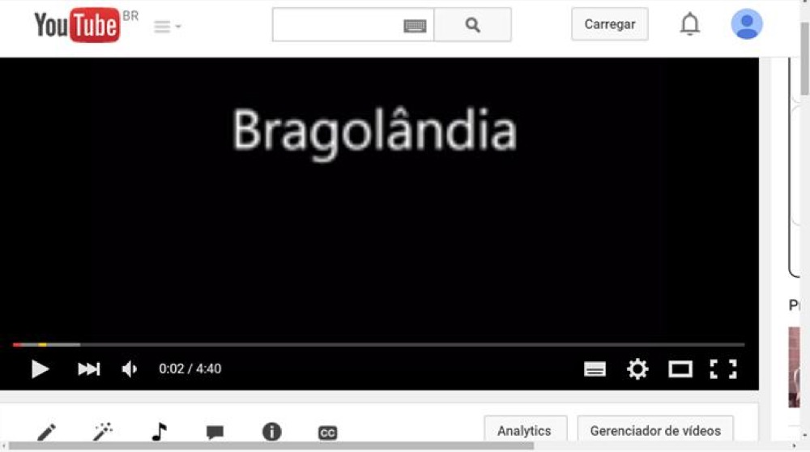
Descrição da foto
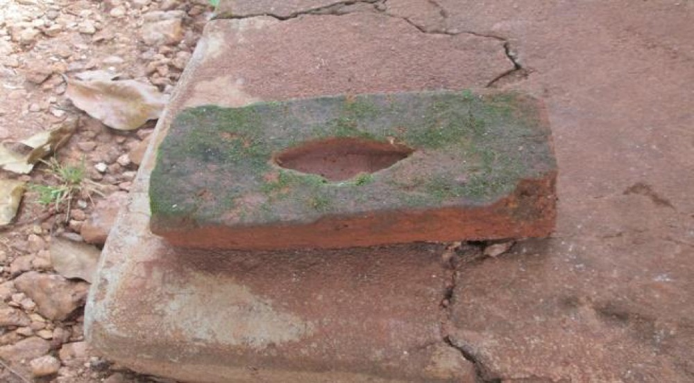
Descrição da foto
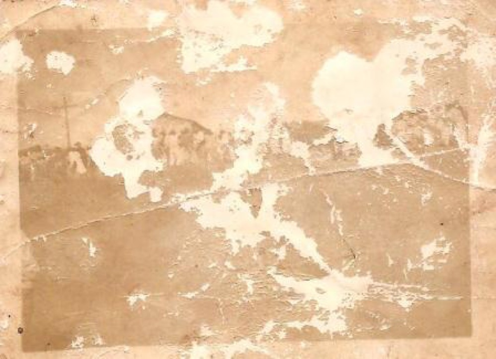
Descrição da foto
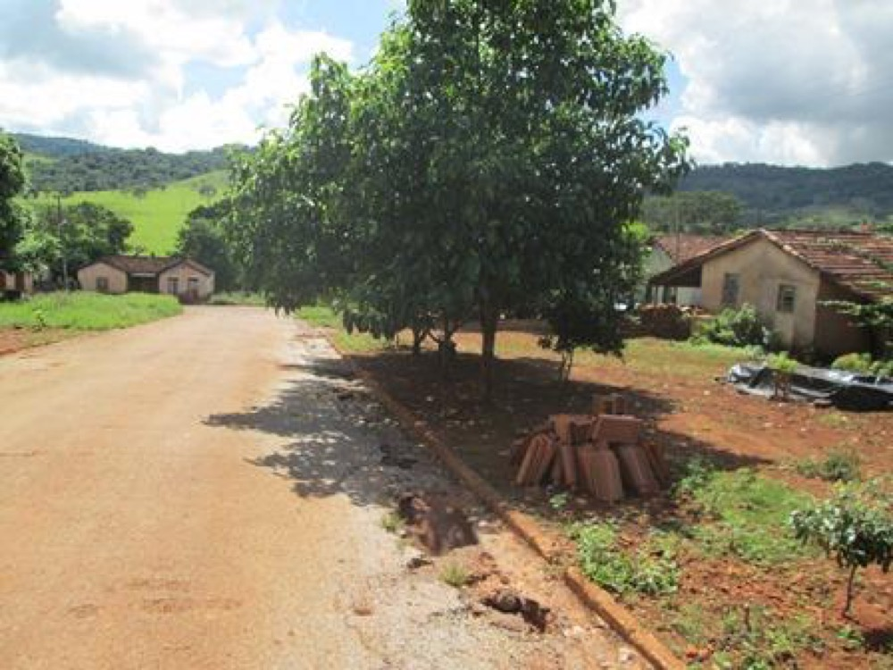
Descrição da foto
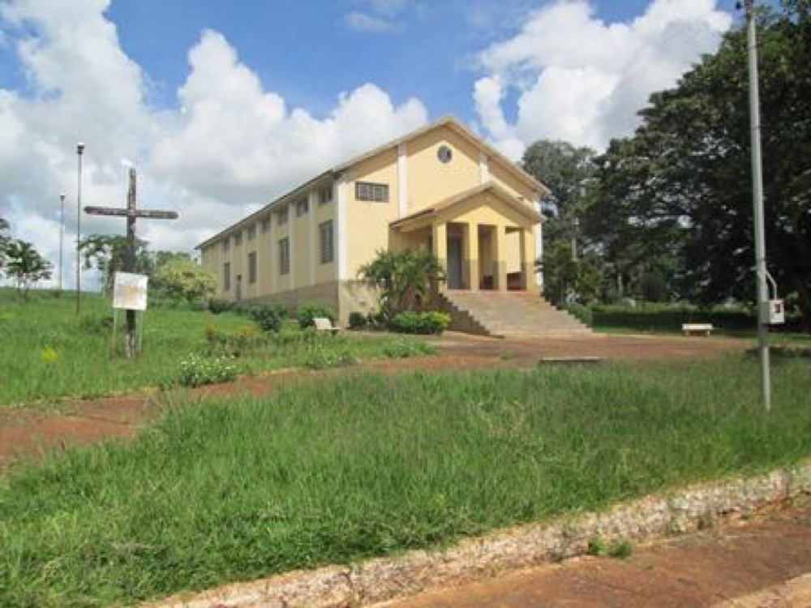
Descrição da foto
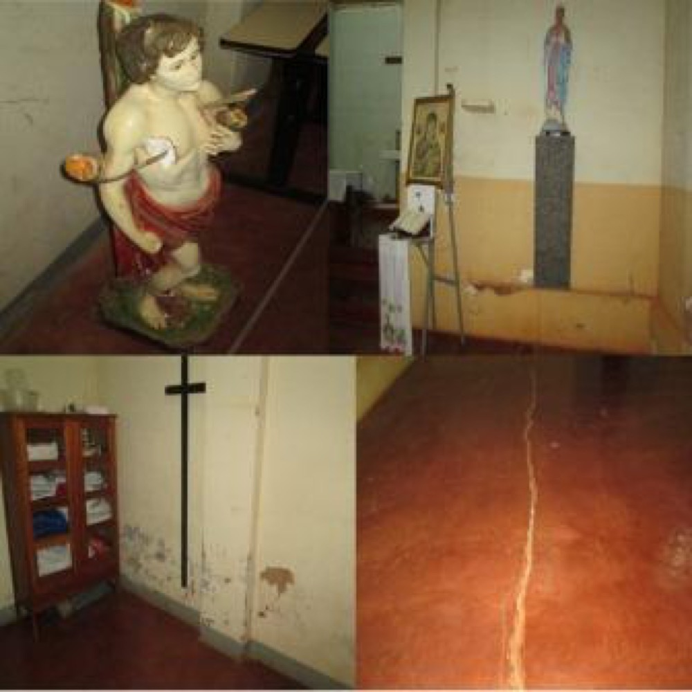
Descrição da foto
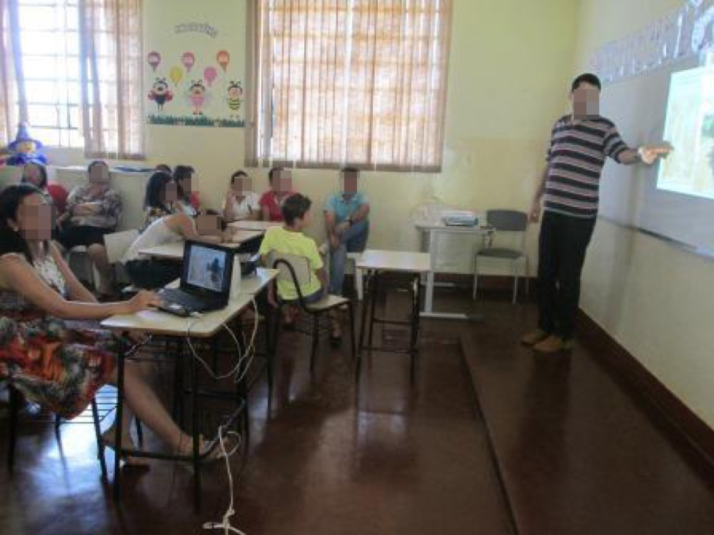
Descrição da foto
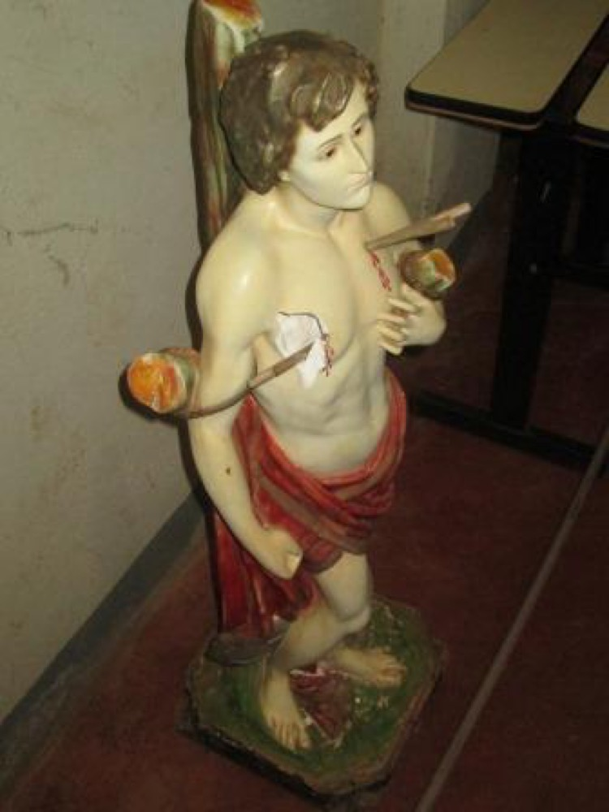
Descrição da fotoDescrição da fotoDescrição da foto
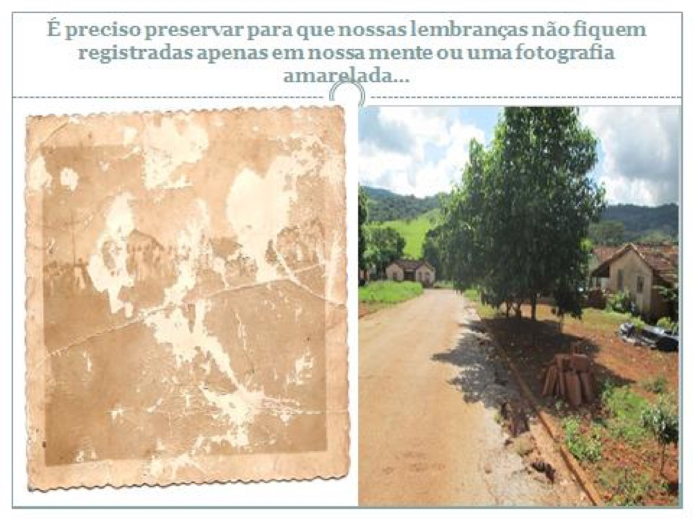
Descrição da foto
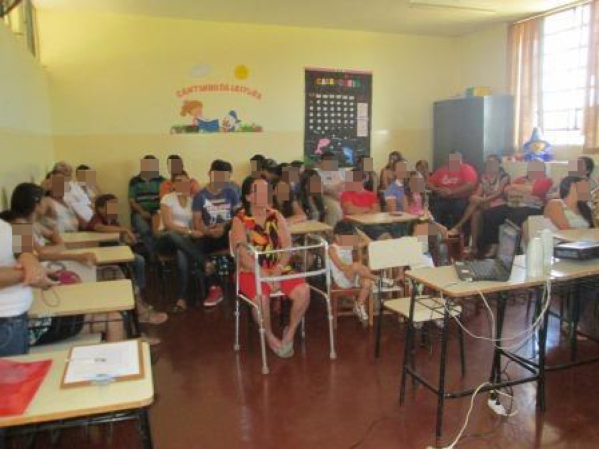
Descrição da foto
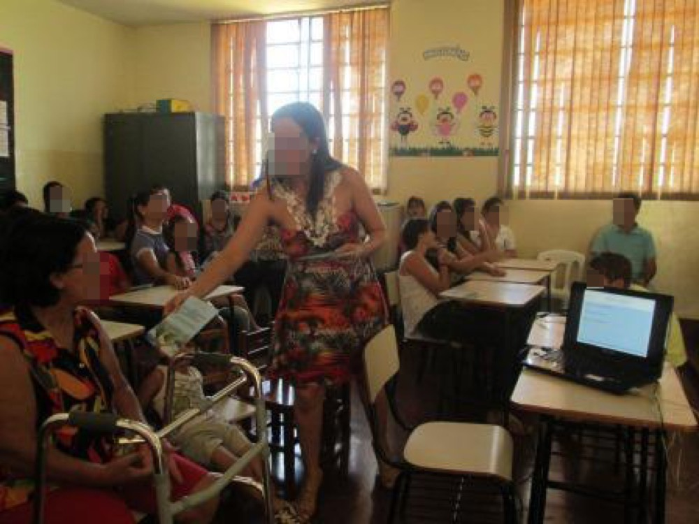
Descrição da foto
INTRODUÇÃO
O patrimônio histórico e cultural reflete o passado e memória de um povo, contendo importância ímpar, pois revela os costumes, o modo de vida, as manifestações religiosas e sociais, os saberes, entre outros. Ao longo do tempo, solidifica a identidade e diversidade histórica e cultural que tornam o grupo singular. Mas, a despeito da importância ímpar do patrimônio histórico e cultural para a sociedade, é até comum presenciar a atuação comissiva ou omissiva do poder público nesse campo.
A medida adequada para o cidadão reverter essa situação danosa é a ação popular, instrumento jurídico com a finalidade de pedir ao Poder Judiciário que determine à autoridade e órgão público competente a adoção de medidas necessárias de combate aos atos lesivos ao patrimônio histórico e cultural - art. 5º, inciso LXXIII, Constituição Federal (BRASIL, 1988).
Embora seja instrumento de grande valia na proteção de garantias coletivas e importante avanço na democracia participativa, a ação popular é pouco manejada na seara do patrimônio histórico e cultural, justamente porque a população pouco ou nada sabe sobre o tema, ante a inexistência de meios que levem a matéria ao seu conhecimento.
Em contato com moradores do Povoado de Bragolândia, foi possível averiguar que a localidade guarda um conjunto arquitetônico em delicado estado de conservação que conta parte da história do Município de Rubiataba. Portanto, a questão-problema é como conscientizar aquela população sobre a importância daquele patrimônio histórico e cultural, bem como a existência e utilidade da ação popular na defesa de sua história e cultura.
126
O projeto de intervenção intitulado de "Ação Popular: instrumento jurídico em defesa do patrimônio histórico e cultural do Povoado de Bragolândia" propõe-se a instigar a população do Povoado de Bragolândia sobre o instrumento jurídico da ação popular e seu papel no resgate e preservação do patrimônio histórico e cultural local. Os objetivos específicos são: (a) analisar o instituto jurídico da ação popular, em especial no campo do patrimônio histórico e cultural; (b) investigar a situação do patrimônio histórico e cultural do Povoado de Bragolândia; (c) pesquisar o nível de conhecimento daquela população acerca da ação popular e patrimônio histórico e cultural; e (e) trabalhar a importância da ação popular para o patrimônio histórico e cultural daquele povoado.
CONCEITO DA AÇÃO POPULAR
A ação popular, conforme prevê a Constituição Federal de 1988, art. 5º, inciso LXXIII (BRASIL, 1988), é o instrumento jurídico que permite qualquer cidadão pedir a anulação de ato lesivo ao patrimônio público ou de entidade de que o Estado participe, à moralidade administrativa, ao meio ambiente e ao patrimônio histórico e cultural. Acrescenta Mancuso que a ação popular objetiva a tutela judicial de interesses coletivos (1993)
A previsão constitucional de que o cidadão possa ingressar com a ação popular, em seu nome, mas com o intuito do benefício coletivo não é por acaso., Essa possibilidade também objetiva a maior participação direta do povo na vida democrática do país, para além do voto nas eleições.
Aspectos históricos da ação popular
O Direito Romano, apesar de seu caráter essencialmente civilista, é o marco inicial do interesse na proteção da res publica (coisa pública), dado que aquele povo entendia de que alguma forma ela pertencia a toda a comunidade. Por isso, cada membro poderia defendê-la em favor do grupo com uma ação popular, como na proteção contra ataques ao sentimento religioso e dos mortos; à segurança das vias e locais públicos; a administração pública e as divisas territoriais (MANCUSO, 1993, p. 27).
No Direito Moderno, após a criação do Estado Democrático, a proteção da coisa pública ganha força com as ações populares na Itália, com a criação de leis que permitiam ao eleitor ou associado propor ação popular contra processo eleitoral irregular e punir seus responsáveis por tais atos (SILVA, 2013, p. 46 a 48).
Já no Brasil, a ação popular surgiu de forma tímida na Constituição de 1824, para combater atos de corrupção do Poder Judiciário, mas é suprimida pela Constituição de 1891. A Constituição de 1934 retoma o instituto nos moldes atuais. As Constituições de 1937, 1945 e 1967, mantiveram-na na essência, porém, os períodos políticos da época não permitiam que de fato o cidadão pudesse manejá-la (MANCUSO, 1993, p. 37 a 44). A promulgação da Constituição Federal de 1988 provocou o fortalecimento das garantias e direitos individuais e a preocupação com a história nacional, entre outras medidas, tanto é que a ação popular ganhou força na proteção do patrimônio histórico e cultural (LENZA, 2009, p. 276).
AÇÃO POPULAR: OBJETO, PARTES E RESULTADO
Objeto e cabimento
O art. 5º, inciso LXXIII, da Constituição Federal, prevê que a ação popular tem como um dos seus objetos atacar a anulação de ato lesivo ao patrimônio histórico e cultural, (BRASIL, 1988), que são atos administrativos ilegais e que geram lesividade.
127
Na seara do patrimônio histórico e cultural, as duas formas de lesão são admitidas e surgem "com a destruição, a deterioração ou a falta de um comportamento efetivo destinado à preservação dos bens, independentemente do prejuízo econômico real" ou valor econômico do bem (MESSA; FRANCISCO, 2013, p. 203).
Os conceitos de ilegalidade e lesividade andam lado a lado, mas nem sempre o primeiro precisa estar junto com o último para invalidação do ato. Por exemplo, a edição de uma lei que autorize o município a destruir prédios públicos desativados é legal – entretanto, se há edifício histórico no conjunto, o ato é lesivo ao patrimônio histórico e cultural.
A omissão como ato lesivo ao patrimônio histórico e cultural
Não raras vezes, a administração pública, por meio de suas autoridades, funcionários ou administradores, age lesando o patrimônio histórico e cultural, tanto de forma comissiva como omissiva, sendo a última forma a mais comum, dado que a administração pública maispeca pelo desleixo do que agindo.
Nesse cenário é que o art. 6º da Lei 4.717/65 tratou de prever a ação popular para combater não somente os atos voluntários da administração pública, mas também os omissos que possam resultar em lesão (BRASIL, 1965).
Há omissão no campo da defesa do patrimônio histórico e cultural "quando determinada pessoa jurídica, por meio de seus agentes e administradores, tenha por dever a prática de atos administrativos destinados à preservação de certos bens e deixa de efetuá-los" (MESSA; FRANCISCO, 2013, p. 206).
As partes do processo
A capacidade de propor a ação popular é definida de forma direta pelo art. 5º, inciso LXXIII, da Constituição Federal, e art. 1º da Lei 4.717/65: qualquer cidadão. Silva explica que não é toda pessoa que detém a capacidade de gozar o referido status, mas só quem é titular do direito ao voto, ou seja, aquele que pode votar e ser votado (SILVA, 2013, p. 155).
Os sujeitos e instituições a serem processados na ação popular estão previstos no art. 5º, inciso LXXIII, da Constituição Federal (BRASIL, 1988), e art. 6º da Lei 4.717/65 (BRASIL, 1965). Silva sintetiza o rol: (a) as entidades públicas: União, Distrito Federal, Estados, Municípios, autarquias, empresas públicas; (b) as sociedades de economia mista, as sociedades mútuas de seguro nas quais a União represente os segurados ausentes, as empresas públicas, as instituições ou fundações de que participe o tesouro público, qualquer pessoa jurídica ou entidades subvencionadas pelos cofres públicos; (c) as autoridades, funcionários ou administradores que houverem autorizado, aprovado, ratificado ou praticado o ato impugnado, bem como os avaliadores no caso do ato previsto no art. 4º, II, "b"; (d) os beneficiários do ato impugnado (2013, p. 161).
No campo do patrimônio histórico e cultural, o art. 23, incisos III a V, da Constituição Federal, tratou de fixar a obrigação comum e igual da União, Estados, Distrito Federal e Municípios quanto à proteção ao patrimônio histórico e cultural nacional (BRASIL, 1988). Isso obriga cada ente estatal a adotar políticas públicas sobre esses aspectos, não podendo se eximir de sua responsabilidade ou afetar a outro o papel exclusivo da tutela do patrimônio histórico e cultural, o que permite ao cidadão incluir no polo passivo da lide os referidos entes públicos e seus agentes, conforme a situação fática.
128
Resultado
A prolação de sentença favorável ao pedido do cidadão provoca a invalidade do ato impugnado e condena os responsáveis e seus beneficiários ao pagamento de perdas e danos. Explica-se: se o cidadão vence a causa, a Justiça torna o ato impugnado nulo desde sua origem, impedindo que "o ato alcance os efeitos queridos, aqueles peculiares que se quiseram constituir". E também obriga o agente causador do dano a reparar os efeitos oriundos do ato ilegal, que é o ponto precípuo da ação popular (SILVA, 2013, p. 231).
Mas Gajardoni (2012, p. 124) adverte que a condenação não será imposta à pessoa jurídica lesada, ainda que tenha defendido o ato: "Afinal, não faz sentido que, sendo a destinatária do produto da reparação, também seja condenada a pagá-lo".
Por exemplo, se a Justiça diz que é ilegal o ato do Governo Federal de reformar um edifício público construído na época do Império, com a modificação essencial em seu conjunto arquitetônico, o responsável pelo ato deverá recuperar o imóvel e promover medidas de restauração da origem. Todavia, quem vai pagar os gastos não são os cofres públicos, mas o agente (pessoa) que mandou praticar o ato (presidente, ministro etc.).
AÇÃO POPULAR E O PATRIMÔNIO HISTÓRICO E CULTURAL
Conceito de patrimônio histórico cultural
A definição de patrimônio histórico e cultural consiste nas manifestações de um povo, no campo das artes, tradições, religiosidade, costumes, escritos, enfim, naquilo que aquele povo é na verdade em seu cotidiano (ROSA apud JUNQUEIRA, 2014).
A preservação da memória de um povo, por meio de monumentos e documentos, tem a finalidade de permitir "o acesso ao que já se passou" (...) "que para continuarem exercendo a função de meio de transporte entre o presente e o passado devem ser preservados" (OLIVEIRA & KUNZLER, 2014, p. 12).
Nesse aspecto, a questão da perda do patrimônio histórico e cultural, a nível internacional, ganha força após os ataques militares durante as guerras mundiais, pois, conforme CHOAY(apud OLIVEIRA & KUNZLER, 2014, p. 8)., "o próprio século XX [quando importantes edificações foram demolidas, tal como o Hotel Imperial de Tóquio] forçou as portas do domínio patrimonial".
Ação popular e o instituto do tombamento
O Decreto-Lei n. 25/1937 reza que o patrimônio histórico e artístico brasileiro é composto apenas dos bens móveis e imóveis que estejam devidamente registrados em um dos 04 Livros do Tombo (BRASIL, 1937), enquanto o art. 216, §1º, da Constituição Federal, prescreve sua proteção por meio de inventários, registros, vigilância, tombamento e desapropriação, e outras formas de acautelamento (BRASIL, 1988).
A leitura isolada dos dispositivos acima gera a sensação de que apenas o bem tombado ou protegido nas outras formas é dotado de proteção pela ação popular. Mas Di Pietro anota que o § 1º do art. 216 não limitou ao uso de tais medidas, tanto é que possibilitou outras formas de acautelamento e proteção do patrimônio cultural (2014, p. 146).
A maioria dos tribunais pátrios tem acolhido a posição da professora Di Pietro, porque a declaração de tombado não é a única forma de reconhecimento de historicidade ou importância cultural dos bens, ao passo que a ação popular e ação civil pública (Ministério Público) estão nas outras formas de acautelamento e proteção (Tribunal Regional Federal 1ª Região e Tribunais de Justiça do Rio Grande do Sul , Minas Gerais e Santa Catarina ).
129
BRASIL. Tribunal Regional Federal da 1ª Região. Processual Civil. Ação Civil Pública. Tombamento. Apelação 13876-43, Quarta Turma do Tribunal Regional Federal da 1ª Região, Brasília/DF, 24 de novembro de 1993. Diário da Justiça, publicado em 03.02.1994.
BRASIL. Tribunal de Justiça do Estado do Rio Grande do Sul. Processual Civil. Ação Civil Pública. Tombamento. Embargos Infringentes n. 70054347232, Décimo Primeiro Grupo Cível do Tribunal de Justiça do Estado do Rio Grande do Sul, Porto Alegre/RS, 16 de agosto de 2013. Diário da Justiça, publicado em 07.10.13.
BRASIL. Tribunal de Justiça do Estado de Minas Gerais. Processual Civil. Ação Civil Pública. Tombamento. Apelação Cível 1.0220.11.000290-8/002, 5ª Câmara Cível do Tribunal de Justiça de Minas Gerais, Belo Horizonte/MG, 18 de outubro de 2012. Diário da Justiça, publicado em 08.11.2012.
BRASIL. Tribunal de Justiça do Estado de Santa Catarina. Constitucional. Mandado de Segurança. Tombamento. Apelação Cível 2009.010203-3, 4ª Câmara de Direito Público do Tribunal de Justiça de Santa Catarina, Florianópolis/SC, 29 de outubro de 2009. Diário da Justiça, publicado em 02.12.2009.
O Tribunal de Justiça do Estado de Goiás, no entanto, em menos de 20 (vinte) anos, tem encontrado certa oscilação em seus julgamentos para proteger o patrimônio histórico e cultural goiano. Com efeito, deixou de obrigar os entes estatais a manterem intactos a antiga estação ferroviária de Anápolis e "paralelepípedos" das ruas de Trindade por falta de tombamento. Já em relação a um edifício em Goiânia, o casarão da Praça do Rosário de Silvânia e algumas casas do "centro velho" de Aparecida de Goiânia, disse que não precisava de prévio tombamento para aplicar sanções aos responsáveis governamentais pelo descuido. Como se vê, a aleatoriedade de decisões sobre o mesmo tema vem causando franca insegurança jurídica sobre o tema e perda da credibilidade das decisões .
Apelação Cível 83754-1/188, DJe 147 de 06.08.2008; Apelação Cível 284924-89.2011, DJe 1667 de 27.10.2014; Agravo de Instrumento 12861-4/180, DJe 12761 de 11.03.1998; Apelação Cível 145721-7/188, DJe 497 de 13.01.2010; e Duplo Grau de Jurisdição 437259-27.2008, DJe 962 de 16.12.2011, respectivamente.
AÇÃO POPULAR E A DEFESA DO PATRIMÔNIO HISTÓRICO E CULTURAL DO POVOADO DE BRAGOLÂNDIA
Povoado de Bragolândia
O Povoado de Bragolândia está localizado às margens da Rodovia Estadual GO 334 e pertence ao Município de Rubiataba e localiza-se distante 10 (dez) quilômetros do último. O total da população é incerto, mas, segundo informações dos próprios moradores e pelo número de eleitores, que engloba moradores das fazendas próximas e exclui crianças, deve girar na faixa de 200 (duzentos) habitantes.
Imagem 1: Mapa entre Rubiataba e o Povoado de Bragolândia. Fonte: Google maps
Os registros históricos do Município de Rubiataba, além de conterem narrativas limitadas, praticamente nada falam sobre a história de seus povoados. No caso de Bragolândia a realidade não é diferente, o que exige que sua história seja obtida junto aos seus moradores, sem precisão das datas dos eventos. As informações históricas a seguir são baseadas nos relatos fornecidos pelos moradores ao longo da pesquisa.
Em meados da década de 1940, algumas famílias moravam e trabalhavam na propriedade rural de Antônio Braga, em casas próximas, de modo que formavam um pequeno conjunto habitacional, o que levou Antônio Braga a ceder ao Município de Rubiataba uma área de 03 (três) alqueires, com a finalidade de que aquelas famílias tivessem um local para morarem e desenvolverem o comércio e casas cerealistas para beneficiamento das lavouras.
130
O Colégio Estadual Antônio Braga abrange o ensino das séries primárias até o ensino médio. O contingente de alunos é próximo a 40 (quarenta), proveniente de famílias dos povoados de Bragolândia e Goiataba, além de propriedades rurais vizinhas.
Patrimônio histórico e cultural do Povoado de Bragolândia
O patrimônio material histórico e cultural do Povoado de Bragolândia pode ser sintetizado em seu conjunto arquitetônico, com enfoque nas casas construídas a partir da década de 50 e as Igrejas Católicas. Tais obras ajudam a contar a história de surgimento e desenvolvimento daquela localidade, pois simboliza tudo aquilo que a comunidade viveu.
Acontece que as construções públicas e privadas do Povoado de Bragolândia vêm passando despercebidas pelos órgãos governamentais, enquanto seus habitantes assistem à degradação de forma melancólica e conformista.
E o cenário tende a piorar, pois a população do Povoado de Bragolândia, marcada essencialmente por pessoas de baixa renda e escolaridade, praticamente desconhece a existência do instrumento jurídico da ação popular, o qual pode ser utilizado como meio de restauração e preservação do patrimônio histórico e cultural local.
História da Igreja Velha de São Sebastião
A primeira Igreja Católica do Povoado de Bragolândia era chamada de Igreja de São Sebastião. As paredes do templo religioso eram basicamente de tijolo de adobe, uma espécie de alvenaria rudimentar, composta de pequenas unidades coladas por meio de argila, conforme dito por Ana Caetano, moradora do local.
O prédio media 15 (quinze) metros de comprimento e 10 (dez) metros de largura. A pintura externa era da cor amarela, enquanto a parte interna estava pintada com tonalidade clara da cor azul. O local possuía altar e sino, símbolos marcantes no catolicismo.
No Brasil rural do século XX, a religiosidade continha papel fundamental na sociedade, o que não era diferente em Bragolândia. Segundo os moradores entrevistados, a Igreja de São Sebastião recebia centenas de fieis que residiam no povoado e região.
Mas aquele lugar não se limitava a uma casa religiosa, pois segundo os moradores entrevistados, era espaço também destinado aos encontros daquela sociedade. Diversas famílias se reuniam envolta da igreja para simplesmente conversarem, enquanto alguns homens negociavam, crianças brincavam na sua área externa e até alguns casais arriscavam um namorico. A questão social da igreja chegou a tal ponto que, durante a festa ao Padroeiro São Sebastião, a comunidade celebrava no local o Concurso da Rainha, o que hoje equivale às competições de Miss.
Outra função social importante da Igreja de São Sebastião reside no fato de que ali funcionou a primeira sede escolar do povoado por vários anos.
No que pesasse a importância da Igreja de São Sebastião, o prédio precisou ser demolido. O motivo chama atenção: a edificação da igreja invadia parte da rua. Ao serem questionados sobre tal justificativa, os atuais moradores pensam que o ato foi exagerado e que poderia ter sido mudado o curso da rua.
A Nova Igreja de São Sebastião e as Casas
Na década de 1970, a comunidade construiu outra Igreja, também denominada de São Sebastião. De acordo com os moradores entrevistados, o Sr. Sebastião Paracatu possuía uma olaria na Fazenda Córrego Grande e foi o responsável pela produção dos tijolos empregados na construção do prédio. A comunidade utilizou bois para nivelar o terreno. O formato da igreja atual corresponde ao do templo antigo, que está alicerçado em pedra.
131
O novo templo religioso também foi utilizado como escola e chegou a contar com 04 (quatro) turmas, de 400 (quatrocentos) alunos, dentre os quais muitos homens e mulheres migraram para o Município de Rubiataba.
Passados mais de 40 anos da construção, a Igreja de São Sebastião apresenta diversos danos na estrutura física, como rachaduras e quedas de reboco nas paredes, trincados no piso, pintura desgastada e estátuas danificadas, inclusive a do próprio São Sebastião.
Noutro ponto, a população entrevistada disse que a Paróquia Jesus Bom Pastor, responsável pela referida igreja, quis reduzir a altura da igreja, mas a comunidade não aceitou e a Paróquia recuou no projeto. O Clero, por sua vez,nega que tenha pensado nessa hipótese, mas acredita que houve boato em seu nome junto àquela população.
A comunidade e a paróquia reconhecem a situação crítica da Igreja de São Sebastião e afirmam que o poder público nada faz para recuperação daquele local.
A Secretaria de Educação e Cultura do Município de Rubiataba, por meio de sua gestora, Maria da Glória Silva, afirmou que diante da inexistência do Plano Municipal de Cultura, não há qualquer previsão de restauração da Igreja de São Sebastião ou qualquer outro edifício do município. Acrescentou que os Governos Federal e Estadual também não oferecem apoio nesse sentido ao Município de Rubiataba.
As primeiras casas do local passam por situação semelhante ao templo, construções estas que guardam no mínimo 40 (quarenta) anos e ajudam a contar o nascimento do Povoado de Bragolândia e do Município de Rubiataba.
Pesquisa de dados e coleta dados
O projeto de intervenção iniciou com a medição do conhecimento da população da cidade de Rubiataba e seu Povoado de Bragolândia acerca da ação popular e patrimônio histórico e cultural, além da escolaridade. A pesquisa consistiu em apresentar aos entrevistados as seguintes perguntas: "(a) Você tem conhecimento de que a ação judicial chamada "ação popular" serve para proteger o patrimônio histórico e cultural da sua comunidade?" e "(b) Você sabe de algum local histórico que foi destruído ou algum evento cultural que deixou de existir por falta de apoio governamental?", em que a resposta seria SIM ou NÃO, sem necessidade de justificativa, no período de 04.03.2014 a 29.04.2015.
Da coleta de dados, apurou-se índice elevado de pessoas que não souberam dizer o que é a ação popular, ao mesmo tempo em que algumas não compreendiam o que seja patrimônio cultural. No caso específico do Povoado de Bragolândia, os números foram ainda mais alarmantes especialmente por contar com alto número de pessoas idosas e de baixa escolaridade. São pessoas que não conhecem a maioria de seus direitos e não sabem a quem reclamar quando precisam. Esses resultados permitiram concluir a existência de sérios indícios acerca da necessidade de intervenção e conscientização daquela população sobre o tema, para que a história do local permaneça viva (pesquisa exposta ao final do trabalho, na seção de anexos).
Estatística processual de ação popular na Comarca de Rubiataba
A Escrivania da Vara de Fazendas Públicas da Comarca de Rubiataba, local em que tramitam processos judiciais onde entes públicos figuram como parte, informou a inexistência de propositura de ação popular com o intuito de proteger o patrimônio histórico e cultural do Povoado de Bragolândia.
132
A falta de ajuizamento da ação popular para proteger o patrimônio histórico e cultural de localidade com cerca de 70 (setenta) anos de idade e arquitetura de notável valor cultural e histórico, mas que está em situação crítica, fortalece a ideia de que a comunidade desconhece o papel do instrumento jurídico da ação popular.
Relatório de ação de intervenção
A proposta de intervenção consistiu em instigar a população do Povoado de Bragolândia sobre o instrumento jurídico da ação popular e seu papel no resgate e preservação do patrimônio histórico e cultural local.
Nesse compasso, traçou-se a estratégia de abordagem do tema por meio de palestra com os moradores do Povoado de Bragolândia, inclusive abarcando seus professores. O discurso de apresentação abordou os pontos positivos e negativos em relação ao patrimônio e histórico e cultural, inclusive, avaliando junto aos moradores a situação local.
A apresentação da palestra "ação popular: instrumento jurídico em defesa do patrimônio histórico e cultural do Povoado de Bragolândia" aconteceu na data de 29.06.2015, as 13h00min, no Colégio Estadual Antônio Braga, Povoado de Bragolândia, com distribuição prévia de convites aos moradores e professores do povoado.
Na data e local informados, estiveram presentes 22(vinte e dois) adultos, divididos entre moradores e professores do povoado, sem contar os alunos do colégio local. A palestra teve início com a identificação do palestrante (aluno responsável pelo projeto de intervenção) e breve exposição dos motivos que levaram a realização daquele trabalho.
Aqui cumpre destacar ponto interessante: os membros da Escola Estadual Antônio Braga não acreditavam que a população compareceria à palestra, como comumente acontece em eventos do gênero. Mas a população respondeu o contrário, pois várias pessoas estiveram presentes, inclusive deixando atividades da lida diária e participando ativamente.
Em seguida, o palestrante exibiu 02 (dois) vídeos, sendo que no primeiro apareciam vários locais com o patrimônio histórico e cultural preservado e utilizado pelos moradores (3min27seg), já o outro tinha imagens de uma casa construída em 1868, Petrópolis/RJ, mas com a maior parte da obra destruída pelo abandono (1min27seg).
Ao ser questionado, o público respondeu com unanimidade que o primeiro vídeo era aquele que trazia a situação mais favorável e desejada para sua comunidade. Também perguntou-se qual cenário que mais se aproximava dos vídeos em relação ao Povoado de Bragolândia. Parte das pessoas disse que era o segundo, enquanto o restante não soube opinar.
Por meio de fotografias, o patrimônio histórico e cultural material do Povoado de Bragolândia foi exposto e o público pode ver diversos danos físicos na Igreja de São Sebastião e nas primeiras casas da localidade. Cabe registrar o sentimento de decepção do público quando viu o estado das edificações locais, especialmente a imagem de São Sebastião, guardada por tantos danos físicos.
O palestrante disse ainda que iria apresentar um grupo de pessoas capazes de mudarem a situação do patrimônio histórico e cultural do Povoado de Bragolândia, e, para isso, exibiu pequeno documentário produzido pelo próprio, em formato de vídeo (04min39seg), que contém imagens do Povoado de Bragolândia e depoimentos de seus moradores, trilha musical e trecho de celebração religiosa .
No decorrer do vídeo, o público percebeu que eram os próprios moradores do Povoado de Bragolândia os agentes capazes de realizarem o dito feito, à medida que eles surgiam como os atores daquela realidade.
A ideia era que aqueles cidadãos despertassem para o fato de que são os principais interessados e beneficiários da proposta em trabalho, além do que se tentou fortalecer o vínculo social com seu próprio patrimônio histórico e cultural.
Nesse momento, passou-se à análise do conceito de patrimônio histórico e cultural. O público começou a identificar espontaneamente os locais e histórias da comunidade, e ao mesmo tempo, contavam suas memórias em tom saudosista. Quando os moradores mais velhos disseram que certa casa já foi uma pensão e recebeu artistas, os mais jovens ouviram atentos, até com certo ar de incredulidade.
A par das considerações feitas pelo público, o palestrante apresentou a fotografia da primeira igreja do Povoado de Bragolândia, que fora demolida para dar lugar a uma rua, e afirmou que a falta de consciência com a cultura e história causa resultado como esse.
A comparação serviu para que o público sentisse a importância da preservação do patrimônio, tanto é que muitos diziam que só ouviram falar da primeira igreja, mas só agora é que puderam ver sua imagem.
Diante da exposição do conceito de patrimônio histórico e cultural, iniciou-se outra fase da palestra, a ação popular.
O instrumento jurídico da ação popular foi apresentado, com identificação de conceito, cabimento, pessoas legitimadas a proporem e responderem, provas necessárias, forma de ingresso e resultados esperados. Exemplos de situações foram mencionados, como a restauração da Igreja de São Sebastião.
O público demonstrou certa surpresa com a existência da ação popular: até mesmo pessoas de idade mais avançada disseram nunca tinham ouvido falar sobre o tema e que nem sabiam da existência desse direito.
É fato perceptível o quanto a população do Povoado de Bragolândia é alheia à existência de diversos direitos e deveres. São pessoas simples e humildes que muitas vezes confundem um ato governamental com um gesto de nobreza do agente político.
Durante o momento destinado ao debate e perguntas, o grupo deixou evidente o desejo de mudança da situação que cerca o patrimônio histórico e cultural local. Outro ponto interessante consistiu em conversas dos moradores e professores sobre ideias para a recuperação da memória do local. Essa parceria pode resultar em melhor apuração de provas para instruírem eventual propositura da ação popular.
Os moradores e professores receberam cartilhas de instrução para propositura da ação popular, contendo os principais tópicos abordados na palestra, além de cópias da Constituição Federal. O objetivo do material foi permitir que o cidadão tivesse em mãos um roteiro capaz de ajuda-lo a propor a ação popular.
A cartilha foi produzida em papel couchê, colorido e com dimensões de 19x29 centímetros (altura x largura). É composta de perguntas e respostas, ilustrada com fotografias, no estilo de guia (cópia em anexo).
CONCLUSÃO
Um povo sem memórias é um povo sem história. E também sem futuro. A preservação do patrimônio histórico e cultural significa justamente salvar a memória coletiva, fruto de usos e costumes de uma sociedade, que formou sua identidade e conta o passado e o presente, além de direcionar os caminhos para o seu desenvolvimento.
134
Apesar de inscrito na Constituição Federal (arts. 215 e 216), agentes políticos e governamentais ignoram o dever estatal de preservação do patrimônio histórico e cultural. Ou adotam medidas prejudiciais, ou se omitem na implantação de políticas específicas.
Nesse aspecto, a ação popular surge como meio adequado de participação direta do cidadão na vida democrática do país, pois permitefiscalização e cobrança ao Poder Judiciário do efetivo cumprimento das normas contra abusos estatais frente à salvaguarda do patrimônio histórico e cultural. Dentre as medidas possíveis, há a suspensão de ações lesivas ao patrimônio histórico e cultural ou a adoção de políticas e medidas de conservação pelos agentes políticos e entidades públicas responsáveis (art. 5º, LXXIII, Constituição Federal).
A partir da pesquisa de conhecimento, apurou-se que a população do Povoado de Bragolândia desconhecia por completo a obrigação estatal de preservação do patrimônio histórico e cultural e muito mais a possibilidade de manejo da ação popular, o que ficou ainda nítido no momento da palestra de intervenção.
A falta de informação caminha lado a lado com a perda de direitos, pois ninguém vai atrás daquilo que não conhece. A comunidade de Bragolândia, ao longo de várias décadas, sofre com a perda de seu patrimônio histórico e cultural, como é o caso da demolição da Igreja de São Sebastião, símbolo do nascimento daquela sociedade. A nova Igreja de São Sebastião e as primeiras casas da comunidade parecem não guardar destino diferente, já que estão com vários danos na estrutura física e sem perspectiva de reforma.
O desenvolvimento do projeto de intervenção exposto aqui permitiu levar aos moradores daquela localidade, incluindo os professores, a existência do instrumento jurídico denominado ação popular e seu papel perante a proteção do patrimônio histórico e cultural.
Ainda que se reconheça que o primeiro contato com a ação popular não será capaz de consolidar a consciência daquela população quanto ao citado instrumento jurídico, é inegável que foi um primeiro passo para despertar a comunidade de Bragolândia, humilde e de baixa escolaridade, relegada à falta de conhecimento, sobre a existência de meio jurídico e de alcance de todos para resgate das memórias ali existentes.
O despertar do cidadão para os seus direitos é missão que percorrerá longo caminho, especialmente em um país onde a população é basicamente formada por operários de baixa instrução escolar e sem percepção do papel de modificação social que essa instrução possui, mas que precisa ser encampado na busca do desenvolvimento nacional.
Portanto, conclui-se que o projeto de intervenção "Ação Popular: instrumento jurídico em defesa do patrimônio histórico e cultural do Povoado de Bragolândia" levou conhecimento à comunidade do Povoado de Bragolândia sobre a ação popular e seu papel no resgate e preservação do patrimônio histórico e cultural local.
REFERÊNCIAS LEGISLATIVAS
BRASIL, Rio de Janeiro, RJ. Organiza a proteção do patrimônio histórico e artístico nacional. Decreto-Lei n. 25, de 30 de novembro de 1937. Rio de Janeiro: Diário Oficial da União, 06 de dezembro de 1937.
BRASIL, Brasília, DF. Lei da Ação Popular. Lei Federal 4.717, 29 de junho de 1965. Brasília: Diário Oficial da União, 29 de junho de 1965.
BRASIL, Brasília, DF. Código de Processo Civil. Lei Federal 5.869, 11 de janeiro de 1973. Brasília: Diário Oficial da União, 17 de janeiro de 1973.
BRASIL, Brasília, DF. Constituição da República Federativa do Brasil, 05 de outubro de 1988. Brasília: Diário Oficial da União, 05 de outubro de 1988.
REFERÊNCIAS BIBLIOGRÁFICAS
DI PIETRO, Maria Sylvia Zanella. Direito. Direito administrativo. São Paulo: Atlas, 2014.
GAJARDONI, Fernando da Fonseca. Direitos Difusos e Coletivos II: (ações coletivas em espécie: ação civil pública, ação popular mandado de segurança coletivo). São Paulo: Saraiva, 2012.
LENZA, Pedro. Direito constitucional esquematizado. São Paulo: Saraiva, 2009.
MANCUSO, Rodolfo de Camargo. Ação Popular. São Paulo: RT, 1993.
MESSA, Ana Flávia. FRANCISCO, José Carlos. Ação Popular. São Paulo: Saraiva, 2013.
OLIVEIRA, Vânia Dolores Estevam de. & KUNZLER, Josiane. Patrimônio cultural: conceitos, usos e conflitos. Goiânia: UFG, 2014.
SILVA, José Afonso da. Ação Popular Constitucional: doutrina e processo. São Paulo: Malheiros, 2013.
JURISPRUDÊNCIA
BRASIL. Tribunal Regional Federal da 1ª Região. Processual Civil. Ação Civil Pública. Tombamento. Apelação 13876-43, Quarta Turma do Tribunal Regional Federal da 1ª Região, Brasília/DF, 24 de novembro de 1993. Diário da Justiça, publicado em 03.02.1994.
BRASIL. Tribunal de Justiça do Estado do Rio Grande do Sul. Processual Civil. Ação Civil Pública. Tombamento. Embargos Infringentes n. 70054347232, Décimo Primeiro Grupo Cível do Tribunal de Justiça do Estado do Rio Grande do Sul, Porto Alegre/RS, 16 de agosto de 2013. Diário da Justiça, publicado em 07.10.13.
BRASIL. Tribunal de Justiça do Estado de Minas Gerais. Processual Civil. Ação Civil Pública. Tombamento. Apelação Cível 1.0220.11.000290-8/002, 5ª Câmara Cível do Tribunal de Justiça de Minas Gerais, Belo Horizonte/MG, 18 de outubro de 2012. Diário da Justiça, publicado em 08.11.2012.
BRASIL. Tribunal de Justiça do Estado de Santa Catarina. Constitucional. Mandado de Segurança. Tombamento. Apelação Cível 2009.010203-3, 4ª Câmara de Direito Público do Tribunal de Justiça de Santa Catarina, Florianópolis/SC, 29 de outubro de 2009. Diário da Justiça, publicado em 02.12.2009.
BRASIL. Tribunal de Justiça do Estado de Goiás. Apelação Cível 83754-1/188, DJe 147 de 06.08.2008; Apelação Cível 284924-89.2011, DJe 1667 de 27.10.2014; Agravo de Instrumento 12861-4/180, DJe 12761 de 11.03.1998; Apelação Cível 145721-7/188, DJe 497 de 13.01.2010; e Duplo Grau de Jurisdição 437259-27.2008, DJe 962 de 16.12.2011.